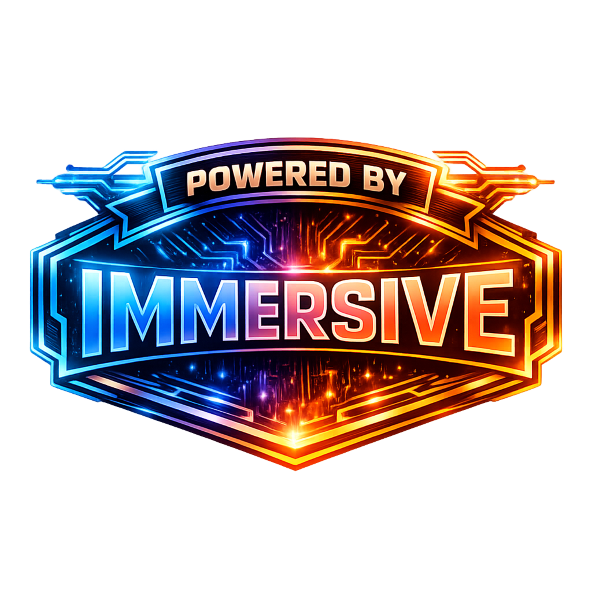

A minimal NUI panel with a few big levers: density, scenarios, LOD distance, and three visual toggles. Dial it in once — it restores on next session.
This is a single resource. No framework hooks. No shared state. Just a clean panel that applies a handful of settings.
ensure Immersive_Performance_Panel-LITEYou get three sliders and a few switches — nothing hidden.
| Action | Default |
|---|---|
| Open / Close panel | F10 (rebindable via keybind settings) |
| Close panel | Esc or the ✕ button |
| Reset values | Reset button |
Each option maps to a native call. No surprises — just clear cause and effect.
SetPedDensityMultiplierThisFrameSetScenarioPedDensityMultiplierThisFrameSetLodScale (clamped to 0.1–1.0)SetDisableDecalRenderingThisFrameSetDisableScreenBlurSetArtificialLightsState (global state)Here’s the signal path when you interact with the panel.
Confirm the resource started successfully. Rebind the key in keybind settings and test again. If it still won’t open, check the in-game console for NUI errors.
Persistence uses client-side resource KVP keys. Change a value, close the panel, reopen it, and confirm it stuck.
That toggle is a global lighting state. If something else also manages lighting, leave this off to avoid conflicts.
MIT — see LICENSE in the repository.